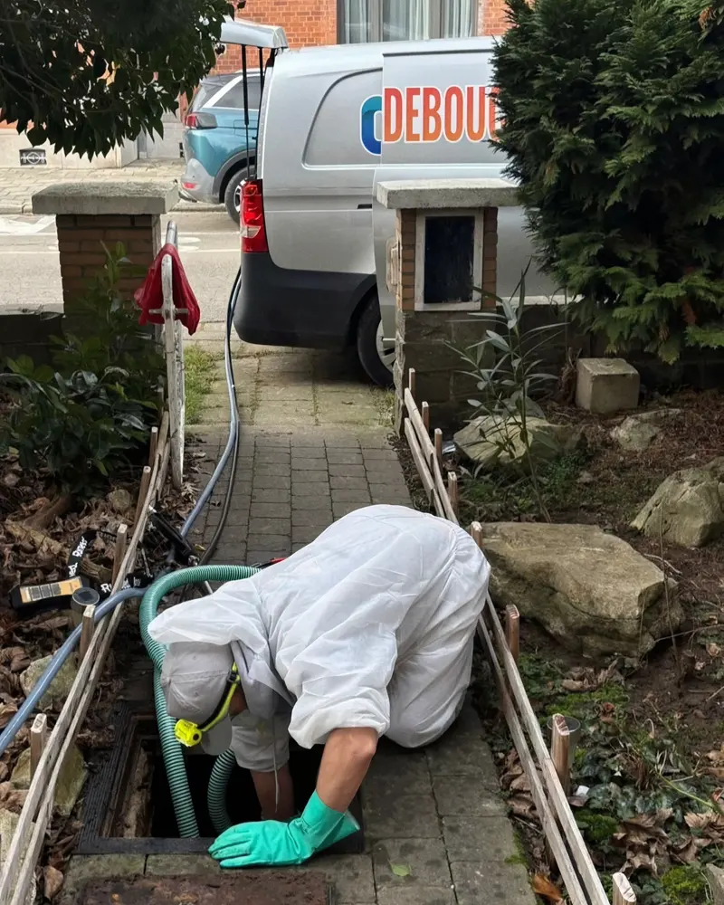

Déboucheur à Vilvorde, autour de Bruxelles · 24h/24
Vous décrivez le problème, on vous dit le prix au téléphone, et c'est ce prix-là que vous payez. Confirmé à la porte, avant la première minute de travail.
Numéro normal, pas de surtaxe. Vous parlez directement à la personne qui envoie la camionnette.
